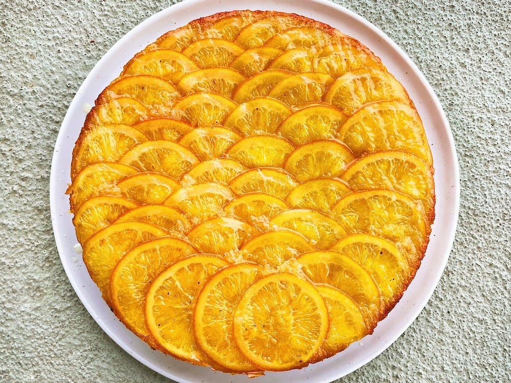

Orange Cardamom Cake

Description
The orange cardamom olive oil cake is perfect for Hanukkah, the holidays
or any day. It’s such a delicious, festive cake, yet it comes together so
easily. I like to serve this orange cardamom olive oil cake with a tiny
drizzle of olive oil on top and some tangy yogurt or ice cream on the
side.
Ingredients
- 1 1/3 cups (266 g) granulated sugar
- 1/2 teaspoon kosher salt
- 2 tablespoons orange zest (about the zest of 2 oranges)
- 12 cardamom pods, freshly ground or 2 teaspoons ground cardamom
- 4 eggs
- 3/4 cup (150 g) extra-virgin olive oil
- 1 teaspoon vanilla extract
-
1/4 cup freshly squeezed orange juice (about the juice of a medium
orange)
- 1/4 teaspoon baking soda
- 1 teaspoon baking powder
- 1 3/4 cups (250 g) all-purpose flour
Instructions
-
Wash the oranges under warm water, gently scrubbing them with a soft
(non-abrasive) sponge.
-
The previous version of this recipe solely used full-circle orange
slices for the upside down cake pattern, which can be hard to properly,
and evenly slice. This new version is here to make things easier and
more efficient: in total, we’ll need about 9 full-circle orange slices
for the upside-down orange pattern, the rest of the slices will be
semi-circles. Aim for 3 full-circle slices per orange.You’ll need 9 of
these total, the rest of slices can be semi-circles.
-
Slice the top third off the orange and set it aside, we’ll use that for
juicing later in the recipe. Cut the orange crosswise, into 3 to 4 mm
(1/8 inch) thin slices. A sharp knife is key here! If you cut some
thicker slices by mistake, save them for juicing later in the recipe, or
for snacking. Once you’ve obtained your 3 full-circle slices per orange,
move on to the following step:
-
Cut the remaining orange in half, and remove the pith from the middle.
-
Slice the orange into 3 to 4 mm (1/8 inch) thin semi-circles. Save the
remaining wedge at the end for snacking or juicing (the orange wedge at
the end that can be tricky to slice into thin semi-circles, and that
yields small slices).
-
Make a cartouche (a parchment paper lid):
-
tear a square/rectangle piece of parchment paper and fold it in half
(image 1)
-
keep folding in half, from tip to tip, until you’re left with a
rough looking triangle (image 2)
-
place the tip of the parchment triangle in the center of your
saucepan and cut to the desired length (that matches the diameter of
the pan) (image 3 and 4)
- cut a small chunk off the tip of the triangle (image 5)
-
unfold the cartouche (image 6)How to make cartouche (parchment paper
lid)
-
In a saucepan on medium heat, combine 1 1/4 cups of sugar, 1 1/4 cups of
water and 5 crushed cardamom pods or 1/2 teaspoon ground cardamom. Add
the sliced oranges to the pan. Place the cartouche right on top of the
oranges, this will keep them submerged in liquid while simmering. Once
the mixture comes to a boil, turn the heat to medium-low, and simmer for
35 to 60 minutes. I’m not a fan of giving time estimates when it comes
to this stuff, there are so many variables that influence the cooking
time that we have no control of, your slices might be thicker than the
ones I used, your medium-low might me my stove’s low, yadayadayada.
Therefore, here’s a before and after example that will help you figure
out if your oranges are done simmering:While the orange slices are
simmering, make the cake:
-
Heat the oven to 175°C or 350°F. 3. Brush a 25-cm or 10-inch round pan
with oil (can be a springform pan). Line the bottom and the sides of the
pan with parchment paper. A 9-inch square pan will also do the job.
-
In a medium mixing bowl add 1 1/3 cups sugar, 2 tablespoons orange zest,
and 12 finely crushed cardamom pods (2 teaspoons ground cardamom) and
1/2 teaspoon kosher salt. Rub the sugar, orange zest, and cardamom
together using your fingers, until fragrant, and until the sugar becomes
a light yellow color.
-
Add 4 eggs to the bowl and vigorously whisk until light, fluffy and
pale. Slowly stream 3/4 cup of olive oil in the egg mixture, while
constantly whisking everything together.
-
Once the olive oil has been incorporated, add 1 teaspoon vanilla
extract, 1/4 cup orange juice (juice the scrappy leftover orange slices
and wedges), 1/4 teaspoon baking soda and whisk to combine. In a
separate bowl, whisk the 1/2 teaspoon baking powder and 1 3/4 cup of
flour together. Sift them in the egg mixture, and gently fold the dry
ingredients using a spatula until there are no more visible dry flour
spots.
-
Arrange all the syrupy orange slices on the bottom of the pan, while the
process might seem tedious, it’s very easy and shouldn’t take you more
than 12 to 15 minutes:
-
I know you’re tempted to arrange the orange slices into a circle, but
that’s not the direction we’re aiming for: instead, build overlapping
rows going from left to right
-
start by building a vertical row on the left using the full-circle
orange slices
-
next, create another vertical row using the semi-circle orange
slices, making sure the straight cut side (not the peel side) is
overlapping the previous row of oranges (view image below)
-
repeat the previous step until the bottom of the pan is fully
covered in orange slices
- if an orange is too thin, overlay another orange slice on top
- arrange any remaining slices on the edge of the pan.
-
Drizzle 1/8 cup of the leftover cardamom orange syrup (in which we
cooked the oranges) over the orange layer at the bottom of the pan.
Lightly drizzle with a glug of olive oil. Save the remaining cardamom
orange syrup for later.
-
Gently pour the cake batter in the pan, over the orange slices. Make
sure you don’t skip this step: place the cake pan on another baking tray
(lined with parchment paper). The second pan will catch any potential
sugar syrup drops (if using a springform pan) and prevent the orange
layer from overcooking and burning. Bake on the middle rack of your
oven,
-
Bake the cake for 60 to 75 minutes, checking on the cake halfway through
baking. If the cake starts to brown too fast on top, cover with aluminum
foil and continue baking. To check if the bake is cooked, gently tap the
center of the cake in the oven. If it’s wobbly, almost fluid underneath,
it’ll need more time. If it’s solid and springy, it’s ready to come out.
All ovens are a little different, hence the roomy time interval.
-
Cool off the cake for at least 10 minutes before taking it out of the
baking pan. Place a large serving plate over the cake pan, then
carefully flip the two. Gently lift up the pan and parchment paper to
reveal the orange pattern. Brush some of the remaining orange cardamom
syrup on top of the cake and it’s ready to be served.